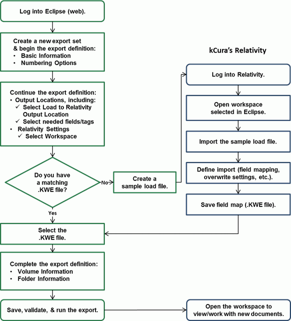

Eclipse provides a variety of options for exporting and producing data and/or files from your Eclipse cases. In Eclipse Web, the following data and files can be exported or produced:
Field/case data (load files)
Image files (with or without redactions)
Text files
Native files
Starting with Eclipse 2016.3.0, it is also possible to load Eclipse data and files directly into Relativity®, should Relativity be required instead of Eclipse for document review.
This page contains the following content:
All members of the Super Admin group can define and run export jobs Eclipse. Others who have appropriate permissions can also perform export (or production) tasks.
Eclipse (web environment) provides a single, straightforward way for you to create an export data set from selected case documents. Optionally, this data set can be configured for production. It can also be used to load data directly into Relativity.
An export set is a group of documents and/or case data typically intended to be imported into another application (for example, printed for deposition preparation), while a production set is a group of documents to be provided to opposing counsel.
From a configuration standpoint, the only difference between an export and production set is production numbering, which identifies produced documents as such, writes them back to the database, and allows them to be included in the case (on the Production tab of the Document Details pane).
|
|
Note: In this section, the term “export” is often used to refer to either export or production sets. Details specific to productions are clearly identified. |
A variety of options exists for export sets, including file type, numbering, and endorsement choices. Output options are based on the files defined in your database (that is, if you do not have native files in your case, none can be exported).
For production sets, detailed summary and history records are maintained for administrative purposes.
|
|
Note: Beginning with Eclipse 2013,
|
Production Shield allows administrators to add another layer of protection for documents that should not be exported (or produced). When using Production Shield, such documents are identified during the validation phase of the export process, giving administrators the opportunity to correct conflicts and ensure only appropriate documents are produced.
Production Shield allows you to define rules for identifying documents based on any of the following criteria:
Fields within the case
Analytics (if installed at your site)
Category
Clusters
Batch
Assigned To
ID
Review Status
Set
Doc Tags
Redaction Categories
Review Status
If you want to export more than one set of documents at a time (create and run multiple or concurrent export jobs), your Eclipse license must be appropriate. If you have any questions about multiple exports, contact IPRO Support.
Prepare for export with the following actions:
Case validation: Beginning with Eclipse 2013, file locations must be validated in Eclipse Administration after product upgrades, and this validation is required before an export job can be completed. See Validate File Paths for details.
Document identification:
Identify which documents are to be exported, then create and save a search in Eclipse that will represent these documents.
In addition, determine what types of files should be exported. Eclipse offers several options, which you can learn about by completing Export Process Introduction below.
Review completion: For production jobs, the document review process is normally completed before you perform the production. Documents should be tagged, redacted, and annotated so that you will be able to create appropriate production set(s) as required by the requesting organization (such as an internal department, opposing counsel, or a government agency).
Optional security criteria: If needed, configure the Production Shield to define the documents that should not be exported (or produced).
As with other Eclipse activities, planning for export jobs will allow you to export needed document sets as efficiently and accurately as possible. It may be useful to “walk through” the steps involved to familiarize yourself with the options available. To do so:
Start Eclipse and log in as an Eclipse administrator.
Open the case for which the export (or production) job is to be run.
In the Case View pane, click Case Administration.
Review Production Shield options:
Click Production Shield.
Click
 .
.
Note that production security is defined in way that is similar to the Fields to Search section of an advanced search in Eclipse.
When you are finished reviewing the Production Shield, review export options:
Click Export Sets.
Click
.
Note the basic details required at the top center of the tab, then click each section—Numbering, Output Locations, and Image Options—and review the settings and options available.
If you are producing documents, note the Production Numbering Fields details in the Numbering Options section.
If you will be loading directly to Relativity, read the information in Preparation for Loading to Relativity below.
When you have finished reviewing the settings and options available for exporting a case, gather information you need and proceed with the procedures in this section.
If you will be loading data/files to Relativity directly from an Eclipse case, the following requirements must be met:
In addition to Eclipse 2016.3.0 or later, version
2016.3.0 or later is required for
The Integration Service must be installed and the service running.
The Eclipse Scheduler Service and Agent(s) must be installed and the service running.
The Relativity Import Service must be installed on the same computer on which the RDC is installed and must be running.
Relativity version 9.0–9.3 must be installed, including the Relativity Desktop Client (RDC).
The Relativity workspace into which Eclipse data is to be imported must exist.
A Relativity .KWE file is required to define the import settings for Relativity (field mapping, overwrite setting, etc.). You can create this based on a sample load file created when you are defining the export set, if desired.
Refer to eCapture and Relativity documentation for assistance.
If you will be loading case data/files directly into Relativity, review the following process diagram, which provides a general overview of steps.
